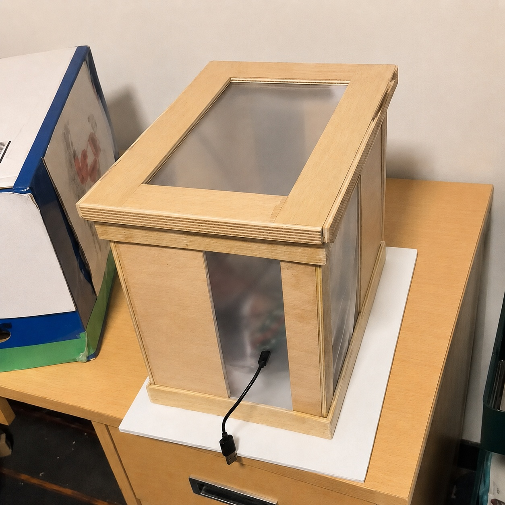
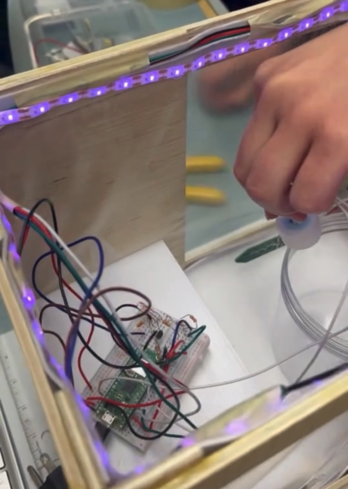
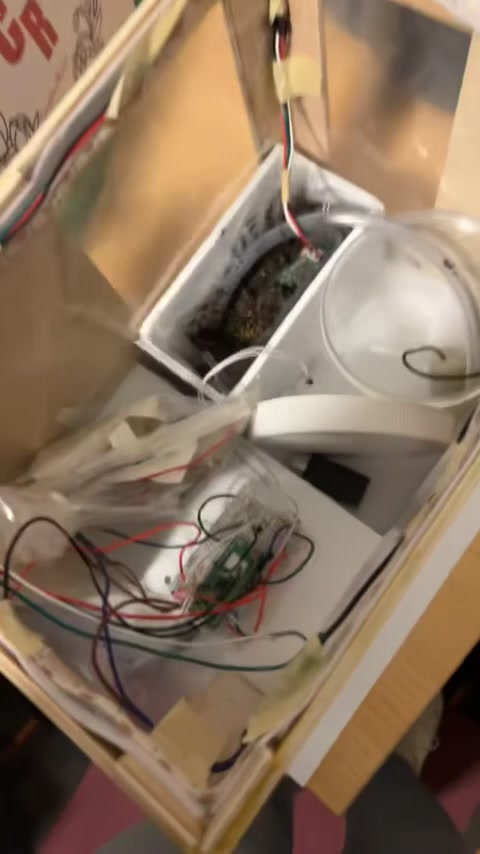
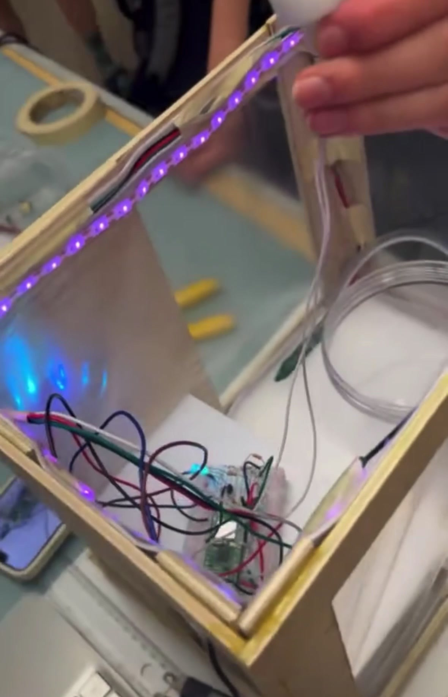

Portable
Indoor Garden
The Portable Indoor Garden was completed as an ENG 200 team design project. The system used a Raspberry Pi Pico to automate watering and lighting from soil-moisture, light-level, and water-level inputs. My contribution focused on CAD and physical integration, while the team developed and assembled the full garden system.

Physical Prototype
Frame, clear cover, plant opening, and internal component space in the assembled prototype.

Wiring Layout
Control wiring routed around the lighting, water line, and plant volume.

Pump Placement
Pump and tubing routed from the reservoir toward the plant while remaining separated from the electronics.
System Breakdown
Physical Layout
The main design problem was fitting the water-delivery path, lighting, electronics, and plant into the same small enclosure while preserving access and separating the wet and electrical regions. The team developed the component layout around those constraints, routing the pump and tubing toward the plant area while keeping the lighting, wiring, and control hardware accessible.
The final layout kept the center of the enclosure open for the plant and gave the water path and electrical hardware separate routes through the enclosure. The plant, reservoir, wiring, and internal components remained accessible during setup and testing.
Cover Frame Detail
Clear cover and frame geometry around the plant access opening.

Lighting + Wiring
Grow-light strip and control wiring routed along the enclosure frame.
Integration Result
The completed prototype combined the frame, reservoir, pump, sensors, lighting, and controller inside one enclosure. Water delivery, sensing, lighting, and status feedback operated as one system while the layout kept the plant area accessible and separated the main water route from the electrical hardware.